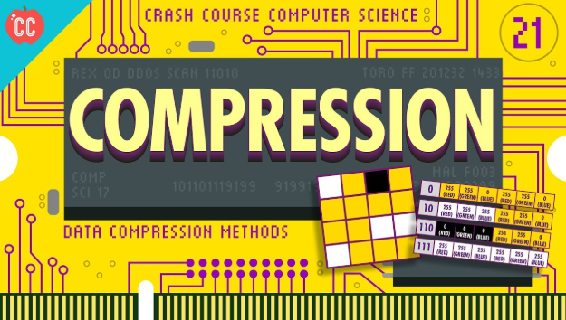

Data Compressie
Bestanden kleiner maken om opslagruimte te besparen en sneller te versturen.
⬅ Terug naar Hoofdpagina
📦 Wat is Data Compressie?
Data compressie is het verkleinen van de bestandsgrootte van foto's, video's, audio en documenten. Door slimme algoritmes te gebruiken, hoeft een computer minder enen en nullen op te slaan. Dit zorgt ervoor dat bestanden sneller gedownload kunnen worden en minder opslagruimte innemen.
🔒 Lossless (Geen kwaliteitsverlies)
🗑️ Lossy (Met kwaliteitsverlies)
📁 ZIP, JPEG, MP3
⚙️ De twee manieren van comprimeren
📦
Lossless Compressie (Zonder verlies):
Er gaat geen enkele informatie verloren. Het bestand wordt precies zo hersteld als het origineel. Voorbeelden: ZIP-bestanden en PNG-afbeeldingen.
Er gaat geen enkele informatie verloren. Het bestand wordt precies zo hersteld als het origineel. Voorbeelden: ZIP-bestanden en PNG-afbeeldingen.
🗑️
Lossy Compressie (Met verlies):
Details die het menselijk oog of oor nauwelijks merkt worden verwijderd om het bestand heel klein te maken. Voorbeelden: MP3 voor muziek en JPEG voor foto's.
Details die het menselijk oog of oor nauwelijks merkt worden verwijderd om het bestand heel klein te maken. Voorbeelden: MP3 voor muziek en JPEG voor foto's.